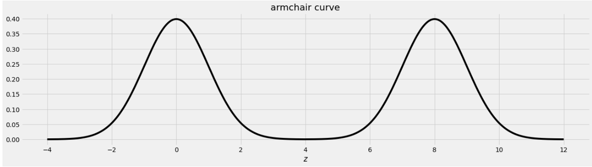

The problems in this worksheet are taken from past exams. Work on them on paper, since the exams you take in this course will also be on paper.
We encourage you to complete this worksheet in a discussion section, which is held live on Monday, November 21th. Solutions will be made available after all discussion sections have concluded. You don’t need to submit your answers anywhere.
Note: We do not plan to cover all problems here in the live discussion section; the problems we don’t cover can be used for extra practice.
Problem 1
Oren has a random sample of 200 dog prices in an array called oren. He has also bootstrapped his sample 1,000 times and stored the mean of each resample in an array called boots.
In this question, assume that the following code has run:
a = np.mean(oren)b = np.std(oren)c =len(oren)
Problem 1.1
What expression best estimates the population’s standard deviation?
b
b / c
b / np.sqrt(c)
b * np.sqrt(c)
Answer: b
The function np.std directly calculated the standard deviation of array oren. Even though oren is sample of the population, its standard deviation is still a pretty good estimate for the standard deviation of the population because it is a random sample. The other options don’t really make sense in this context.
Difficulty: ⭐️⭐️⭐️
The average score on this problem was 57%.
Problem 1.2
Which expression best estimates the mean of boots?
0
a
(oren - a).mean()
(oren - a) / b
Answer: a
Note that a is equal to the mean of oren, which is a pretty good estimator of the mean of the overall population as well as the mean of the distribution of sample means. The other options don’t really make sense in this context.
Difficulty: ⭐️⭐️
The average score on this problem was 89%.
Problem 1.3
What expression best estimates the standard deviation of boots?
b
b / c
b / np.sqrt(c)
(a -b) / np.sqrt(c)
Answer: b / np.sqrt(c)
Note that we can use the Central Limit Theorem for this problem which states that the standard deviation (SD) of the distribution of sample means is equal to (population SD) / np.sqrt(sample size). Since the SD of the sample is also the SD of the population in this case, we can plug our variables in to see that b / np.sqrt(c) is the answer.
Difficulty: ⭐️
The average score on this problem was 91%.
Problem 1.4
What is the dog price of $560 in standard units?
(560 - a) / b
(560 - a) / (b / np.sqrt(c))
(a - 560) / (b / np.sqrt(c))}
abs(560 - a) / b
abs(560 - a) / (b / np.sqrt(c))
Answer: (560 - a) / b
To convert a value to standard units, we take the value, subtract the mean from it, and divide by SD. In this case that is (560 - a) / b, because a is the mean of our dog prices sample array and b is the SD of the dog prices sample array.
Difficulty: ⭐️⭐️
The average score on this problem was 80%.
Problem 1.5
The distribution of boots is normal because of the Central Limit Theorem.
True
False
Answer: True
True. The central limit theorem states that if you have a population and you take a sufficiently large number of random samples from the population, then the distribution of the sample means will be approximately normally distributed.
Difficulty: ⭐️
The average score on this problem was 91%.
Problem 1.6
If Oren’s sample was 400 dogs instead of 200, the standard deviation of boots will…
Increase by a factor of 2
Increase by a factor of \sqrt{2}
Decrease by a factor of 2
Decrease by a factor of \sqrt{2}
None of the above
Answer: Decrease by a factor of \sqrt{2}
Recall that the central limit theorem states that the STD of the sample distribution is equal to (population STD) / np.sqrt(sample size). So if we increase the sample size by a factor of 2, the STD of the sample distribution will decrease by a factor of \sqrt{2}.
Difficulty: ⭐️⭐️
The average score on this problem was 80%.
Problem 1.7
If Oren took 4000 bootstrap resamples instead of 1000, the standard deviation of boots will…
Increase by a factor of 4
Increase by a factor of 2
Decrease by a factor of 2
Decrease by a factor of 4
None of the above
Answer: None of the above
Again, from our formula given by the central limit theorem, the sample STD doesn’t depend on the number of bootstrap resamples so long as it’s “sufficiently large”. Thus increasing our bootstrap sample from 1000 to 4000 will have no effect on the std of boots
Difficulty: ⭐️⭐️⭐️
The average score on this problem was 74%.
Problem 1.8
Write one line of code that evaluates to the right endpoint of a 92% CLT-Based confidence interval for the mean dog price. The following expressions may help:
Recall that a 92% confidence interval means an interval that consists of the middle 92% of the distribution. In other words, we want to “chop” off 4% from either end of the ditribution. Thus to get the right endpoint, we want the value corresponding to the 96th percentile in the mean dog price distribution, or mean + 1.75 * (SD of population / np.sqrt(sample size) or a + 1.75 * b / np.sqrt(c) (we divide by np.sqrt(c) due to the central limit theorem). Note that the second line of information that was given stats.norm.cdf(1.4) is irrelavant to this particular problem.
Difficulty: ⭐️⭐️⭐️⭐️
The average score on this problem was 48%.
Problem 2
Answer the following true/false questions.
Problem 2.1
For a given sample, a 90% confidence interval is narrower than a 95% confidence interval.
True
False
Answer: True
The more narrow an interval is, the less confident one is that the intervals one creates will contain the true population parameter.
Difficulty: ⭐️
The average score on this problem was 91%.
Problem 2.2
The distribution of sample proportions is roughly normal for large samples because of the Central Limit Theorem.
True
False
Answer: True
This is just the definition of Central Limit Theorem. Remember that a proportion is a mean of 0s and 1s.
Difficulty: ⭐️⭐️⭐️⭐️
The average score on this problem was 43%.
Problem 2.3
Chebyshev’s inequality implies that we can always create at least a 96% confidence interval from a bootstrap distribution using the mean of the distribution plus or minus 5 standard deviations.
True
False
Answer: True
By Chebyshev’s theorem, at least 1 - 1 / z^2 of the data is within z STD of the mean. Thus 1 - 1 / 5^2 = 0.96 of the data is within 5 STD of the mean.
Difficulty: ⭐️⭐️⭐️
The average score on this problem was 51%.
Problem 3
An IKEA employee has access to a data set of the purchase amounts for 40,000 customer transactions. This data set is roughly normally distributed with mean 150 dollars and standard deviation 25 dollars.
Problem 3.1
Why is the distribution of purchase amounts roughly normal?
because of the Central Limit Theorem
for some other reason
Answer: for some other reason
The data that we have is a sample of purchase amounts. It is not a sample mean or sample sum, so the Central Limit Theorem does not apply. The data just naturally happens to be roughly normally distributed, like human heights, for example.
Difficulty: ⭐️⭐️⭐️⭐️
The average score on this problem was 42%.
Problem 3.2
Shiv spends 300 dollars at IKEA. How would we describe Shiv’s purchase in standard units?
0 standard units
2 standard units
4 standard units
6 standard units
Answer: 6 standard units
To standardize a data value, we subtract the mean of the distribution and divide by the standard deviation:
A more intuitive way to think about standard units is the number of standard deviations above the mean (where negative means below the mean). Here, Shiv spent 150 dollars more than average. One standard deviation is 25 dollars, so 150 dollars is six standard deviations.
Difficulty: ⭐️
The average score on this problem was 97%.
Problem 3.3
Give the endpoints of the CLT-based 95% confidence interval for the mean IKEA purchase amount, based on this data.
Answer: 149.75 and 150.25 dollars
The Central Limit Theorem tells us about the distribution of the sample mean purchase amount. That’s not the distribution the employee has, but rather a distribution that shows how the mean of a different sample of 40,000 purchases might have turned out. Specifically, we know the following information about the distribution of the sample mean.
It is roughly normally distributed.
Its mean is about 150 dollars, the same as the mean of the employee’s sample.
Its standard deviation is about \frac{\text{sample standard deviation}}{\sqrt{\text{sample size}}}=\frac{25}{\sqrt{40000}} = \frac{25}{200} = \frac{1}{8}.
Since the distribution of the sample mean is roughly normal, we can find a 95% confidence interval for the sample mean by stepping out two standard deviations from the center, using the fact that 95% of the area of a normal distribution falls within 2 standard deviations of the mean. Therefore the endpoints of the CLT-based 95% confidence interval for the mean IKEA purchase amount are
150 - 2*\frac{1}{8} = 149.75 dollars, and
150 + 2*\frac{1}{8} = 150.25 dollars.
Difficulty: ⭐️⭐️⭐️⭐️
The average score on this problem was 36%.
Problem 4
Answer the following questions about a basketball dataset.
Problem 4.1
Suppose you have a random sample of 36 games in a basketball season. In your sample, the mean number of points per game is 9, with a standard deviation of 4 points per game. Using only this information, compute a 95% confidence interval for the true mean points per game in that season. What are the left and right endpoints of your interval?
Answer:[7.667, 10.333]
In a normal distribution, roughly 95% of values are within 2 standard deviations of the mean. The CLT tells us that the distribution of sample means is roughly normal, and in subpart 4 of this problem we already computed the SD of the distribution of sample means to be \frac{2}{3}.
So, our normal-based 95% confidence interval is computed as follows:
\begin{aligned} &[\text{mean of sample} - 2 \cdot \text{SD of distribution of sample means}, \text{mean of sample} + 2 \cdot \text{SD of distribution of sample means}] \\ &= [9 - 2 \cdot \frac{4}{\sqrt{36}}, 9 + 2 \cdot \frac{4}{\sqrt{36}}] \\ &= [9 - \frac{4}{3}, 9 + \frac{4}{3}] \\ &\approx \boxed{[7.667, 10.333]} \end{aligned}
Difficulty: ⭐️⭐️
The average score on this problem was 87%.
Problem 4.2
It turns out that the true mean number of points per game in that season was 7, which is not in the interval you found above (if it is, check your work!). Select the true statement below.
The 95% confidence interval we created in the previous subpart did not contain the true mean points per game, which means that the distribution of the sample mean is not normal.
The 95% confidence interval we created in the previous subpart did not contain the true mean points per game, which means that the distribution of points per game in small_season is not normal.
The 95% confidence interval we created in the previous subpart did not contain the true mean points per game. This is to be expected, because the Central Limit Theorem is only correct 95% of the time.
The 95% confidence interval we created in the previous subpart did not contain the true mean points per game, but if we collected many original samples and constructed many 95% confidence intervals, then roughly 95% of them would contain the true mean points per game.
The 95% confidence interval we created in the previous subpart did not contain the true mean points per game, but if we collected many original samples and constructed many 95% confidence intervals, then exactly 95% of them would contain the true mean points per game.
Answer: The 95% confidence interval we created in the previous subpart did not contain the true mean points per game, but if we collected many original samples and constructed many 95% confidence intervals, then roughly 95% of them would contain the true mean points per game.
In a confidence interval, the confidence level gives us a level of confidence in the process used to create the confidence interval. If we repeat the process of collecting a sample from the population and using the sample to construct a c% confidence interval for the population mean, then roughly c% of the intervals we create should contain the population mean. Option 4 is the only option that corresponds to this interpretation; the others are all incorrect in different ways.
Difficulty: ⭐️⭐️
The average score on this problem was 87%.
Problem 5
An IKEA chair designer is experimenting with some new ideas for armchair designs. She has the idea of making the arm rests shaped like bell curves, or normal distributions. A cross-section of the armchair design is shown below.

This was created by taking the portion of the standard normal distribution from z=-4 to z=4 and adjoining two copies of it, one centered at z=0 and the other centered at z=8. Let’s call this shape the armchair curve.
Since the area under the standard normal curve from z=-4 to z=4 is approximately 1, the total area under the armchair curve is approximately 2.
Complete the implementation of the two functions below:
area_left_of(z) should return the area under the armchair curve to the left of z, assuming -4 <= z <= 12, and
area_between(x, y) should return the area under the armchair curve between x and y, assuming -4 <= x <= y <= 12.
import scipydef area_left_of(z):'''Returns the area under the armchair curve to the left of z. Assume -4 <= z <= 12'''if ___(a)___: return ___(b)___ return scipy.stats.norm.cdf(z)def area_between(x, y):'''Returns the area under the armchair curve between x and y. Assume -4 <= x <= y <= 12.'''return ___(c)___
Problem 5.1
What goes in blank (a)?
Answer: z>4 or z>=4
The body of the function contains an if statement followed by a return statement, which executes only when the if condition is false. In that case, the function returns scipy.stats.norm.cdf(z), which is the area under the standard normal curve to the left of z. When z is in the left half of the armchair curve, the area under the armchair curve to the left of z is the area under the standard normal curve to the left of z because the left half of the armchair curve is a standard normal curve, centered at 0. So we want to execute the return statement in that case, but not if z is in the right half of the armchair curve, since in that case the area to the left of z under the armchair curve should be more than 1, and scipy.stats.norm.cdf(z) can never exceed 1. This means the if condition needs to correspond to z being in the right half of the armchair curve, which corresponds to z>4 or z>=4, either of which is a correct solution.
Difficulty: ⭐️⭐️⭐️
The average score on this problem was 72%.
Problem 5.2
What goes in blank (b)?
Answer: 1+scipy.stats.norm.cdf(z-8)
This blank should contain the value we want to return when z is in the right half of the armchair curve. In this case, the area under the armchair curve to the left of z is the sum of two areas:
the area under the entire left half of the armchair curve, which is 1, and
the area under the portion of the right half of the armchair curve that falls to the left of z.
Since the right half of the armchair curve is just a standard normal curve that’s been shifted to the right by 8 units, the area under that normal curve to the left of z is the same as the area to the left of z-8 on the standard normal curve that’s centered at 0. Adding the portion from the left half and the right half of the armchair curve gives 1+scipy.stats.norm.cdf(z-8).
For example, if we want to find the area under the armchair curve to the left of 9, we need to total the yellow and blue areas in the image below.
The yellow area is 1 and the blue area is the same as the area under the standard normal curve (or the left half of the armchair curve) to the left of 1 because 1 is the point on the left half of the armchair curve that corresponds to 9 on the right half. In general, we need to subtract 8 from a value on the right half to get the corresponding value on the left half.
Difficulty: ⭐️⭐️⭐️
The average score on this problem was 54%.
Problem 5.3
What goes in blank (c)?
Answer: area_left_of(y) - area_left_of(x)
In general, we can find the area under any curve between x and y by taking the area under the curve to the left of y and subtracting the area under the curve to the left of x. Since we have a function to find the area to the left of any given point in the armchair curve, we just need to call that function twice with the appropriate inputs and subtract the result.
Difficulty: ⭐️⭐️⭐️
The average score on this problem was 60%.
Problem 6
Suppose you have correctly implemented the function area_between(x, y) so that it returns the area under the armchair curve between x and y, assuming the inputs satisfy -4 <= x <= y <= 12.
Note: You can still do this question, even if you didn’t know how to do the previous one.
Problem 6.1
What is the approximate value of area_between(-2, 10)?
1.9
1.95
1.975
2
Answer: 1.95
The area we want to find is shown below in two colors. We can find the area in each half of the armchair curve separately and add the results.
For the yellow area, we know that the area within 2 standard deviations of the mean on the standard normal curve is 0.95. The remaining 0.05 is split equally on both sides, so the yellow area is 0.975.
The blue area is the same by symmetry so the total shaded area is 0.975*2 = 1.95.
Equivalently, we can use the fact that the total area under the armchair curve is 2, and the amount of unshaded area on either side is 0.025, so the total shaded area is 2 - (0.025*2) = 1.95.
Difficulty: ⭐️⭐️
The average score on this problem was 76%.
Problem 6.2
What is the approximate value of area_between(0.37, 8.37)?
0.68
0.95
1
1.5
Answer: 1
The area we want to find is shown below in two colors.
As we saw in Problem 12.2, the point on the left half of the armchair curve that corresponds to 8.37 is 0.37. This means that if we move the blue area from the right half of the armchair curve to the left half, it will fit perfectly, as shown below.
Therefore the total of the blue and yellow areas is the same as the area under one standard normal curve, which is 1.
Difficulty: ⭐️⭐️
The average score on this problem was 76%.
üëã Feedback: Find an error? Still confused? Have a suggestion? Let us know here.